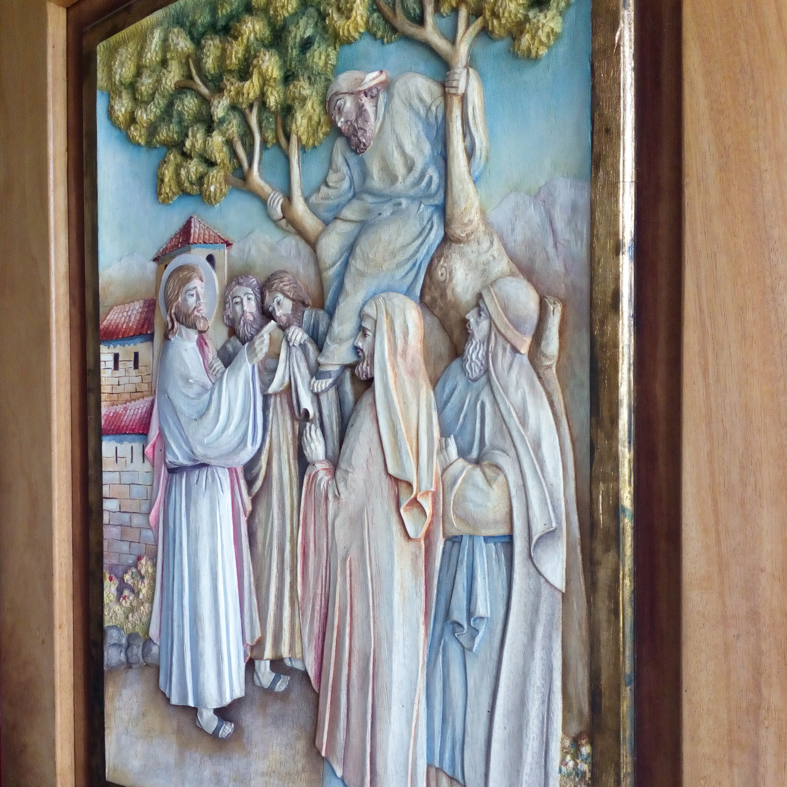
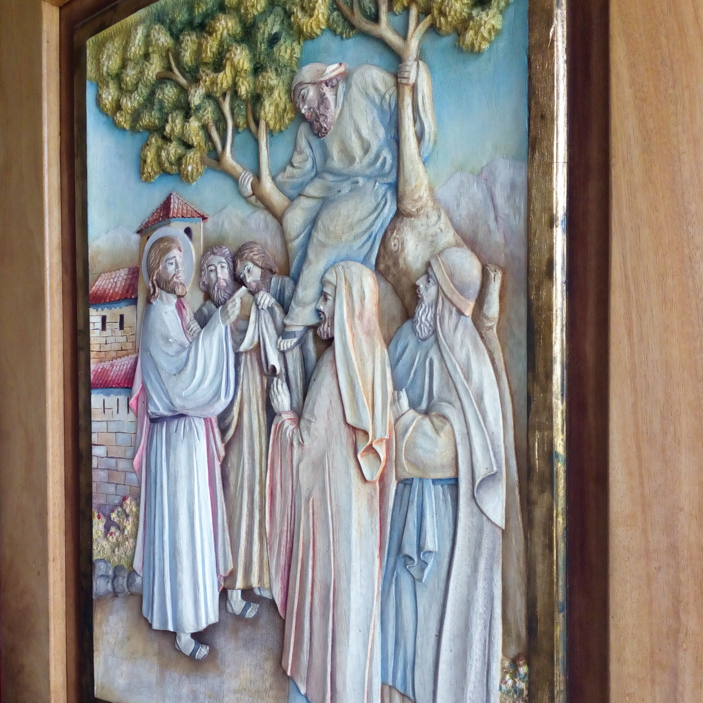

Lugares Visitados
Polloc - Santuario de la Virgen del Rosario
Visite Polloc en el marzo del 2020, junto a mis mejores amigas Naomi e Ingrid, fue un paseo muy divertido.
Esta ubicado en el distrito de La Encañada, a 34 km. de la ciudad de Cajamarca, es un complejo religioso que
cuenta con paredes, columnas, techos y piso decorados bajo la técnica de mosaico.
La misión italiana, desde hace aproximadamente diez años viene construyendo esta hermosa edificación recubierta con
materiales traídos desde el viejo continente; además capacita a niños, jóvenes y adultos en su escuela
de arte Don Bosco, quienes participan en los acabados de las edificaciones y en la creación de otros
souvenirs artísticos de madera y piedra que se encuentran a la venta en un museo en el mismo lugar.
El complejo cuenta con un templo, un hermoso santuario con balcones de madera tallada y una gruta
de agua, entre otros hermosos espacios; todo rodeado de un paisaje maravilloso entre un cielo despejado
y un campo verde vibrante.
Nosotras fuimos en un colectivo a llacanora y luego caminamos unos 20 min.
Al aldo del centro turistico, se puede disfrutar de platos tipicos de la ciudad, en especial disfrutar un plato muy delicio, Trucha frita o en ceviche.


 

Cataratas de la Paccha
Estas cataratas son poco conocidad, en Julio del 2021, mis primos y yo decidimos conocerla. Esta ubicada en el centro poblado de Otuzco - Miraflores
a 30 min de Cajamarca. Es un largo camido de dos horas, camino de montañas, bosques y quebradas a dentro. Nos ubicamos por el Google Maps, quien fue
nuestra guia. Es un cirsuito de cascadas y catarata y posas entre 6 a 7 metros de profundidad.


Baños termales Yumagual
Es un circuito de aguas termales al aire libre, esta ubicado en el cruce de Choten - San Juan a 45 min de
tiene un camino marcado que lleva a diferentes posas volcanicas, de agua caliente temperadas de la corriente del río.
A una hora cascada arriba se puede encontrar una hermosa catarata.


Estatuas gigantes de Piedra
Es una verdadera obra de arte con piezas que miden aproximadamente cuatro metros de altura y representan el proceso histórico de Cajamarca.
Está ubicada a ocho kilómetros de la ciudad, en la comunidad de Llushcapampa además de un mirador desde el que se visualiza la ciudad y el paisaje natural.